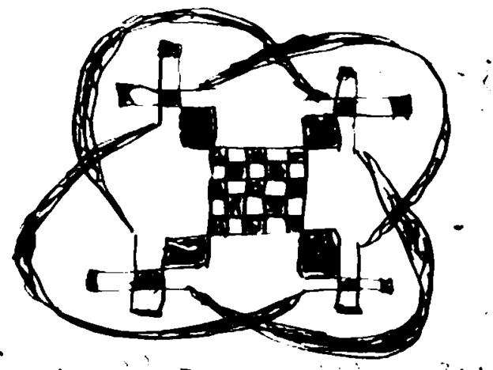
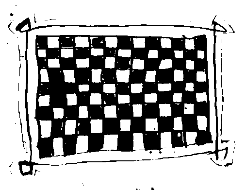
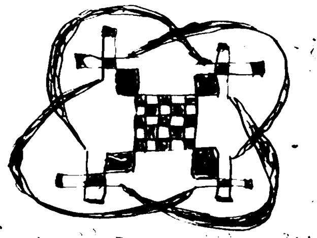
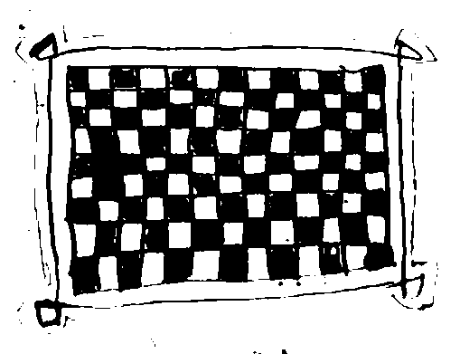

1280CumarIbnSayyid AyatTaylor.SCHAD2D6-ara1
[جـ 1 صـ 1و]
|1| بْسمِ1 اللَّـهِ2 الرَّحْمَـٰنِ3 الرَّحِيم4  ⊛ صلى الله على سيدنا محمد
|2| 2{{ الخير عند الله لا لغيره 3{{ }}2
⊛ صلى الله على سيدنا محمد
|2| 2{{ الخير عند الله لا لغيره 3{{ }}2  ⊛ الحمد لله اللذي خلق5 الخلق6
|3| لعبادته حتى جرب7 افعالهم8 واقوالهم9 }}3
|4| اني اكتب هذا الكتاب في10 سنة الف11 واحد وثمان مائة
|5| وثلاث وخمسين سنة ⊛ في10 يوم الاولى في10 الشهر اكتوبره
|6| ارسلت هذا الكتاب في10 رجل صالح جدا
|7| 8{{ ⊛ الْحَمْدُ15 لِلَّـهِ16 رَبِّ17 الْعَالَمِينَ18 الرَّحْمَـٰنِ3 الرَّحِيمِ20 مَالِكِ21 يَوْمِ22 الدِّينِ23
|8| إِيَّاكَ24 نَعْبُدُ25 وَإِيَّاكَ26 نَسْتَعِينُ27 اهْدِنَا28 الصِّرَاطَ29 الْمُسْتَقِيمَ30 ⊛
|9| صِرَاطَ31 الَّذِينَ32 أَنْعَمْتَ33 عَلَيْهِمْ34 غَيْرِ35 الْمَغْضُوبِ36 عَلَيْهِمْ34
|10| وَلَا38 الضَّالِّينَ39 ءامين
⊛ الحمد لله اللذي خلق5 الخلق6
|3| لعبادته حتى جرب7 افعالهم8 واقوالهم9 }}3
|4| اني اكتب هذا الكتاب في10 سنة الف11 واحد وثمان مائة
|5| وثلاث وخمسين سنة ⊛ في10 يوم الاولى في10 الشهر اكتوبره
|6| ارسلت هذا الكتاب في10 رجل صالح جدا
|7| 8{{ ⊛ الْحَمْدُ15 لِلَّـهِ16 رَبِّ17 الْعَالَمِينَ18 الرَّحْمَـٰنِ3 الرَّحِيمِ20 مَالِكِ21 يَوْمِ22 الدِّينِ23
|8| إِيَّاكَ24 نَعْبُدُ25 وَإِيَّاكَ26 نَسْتَعِينُ27 اهْدِنَا28 الصِّرَاطَ29 الْمُسْتَقِيمَ30 ⊛
|9| صِرَاطَ31 الَّذِينَ32 أَنْعَمْتَ33 عَلَيْهِمْ34 غَيْرِ35 الْمَغْضُوبِ36 عَلَيْهِمْ34
|10| وَلَا38 الضَّالِّينَ39 ءامين  ⊛
⊛  ⊛
⊛  ⊛
⊛  ⊛ }}8
|11| 9{{ رفعت40 عيني اليك يا رب الساكن في10 السماء ⊛ فهاهما42
|12| كعيون العبيد الي أيدي مواليهم وكعين الأمة43 الي يد سيدتها
|13| كذلك عيوننا الي الرب الهنا حتي يتراف44 علينا ⊛
|14| ارحمنا يا رب ارحمنا واغفر45 لنا فقد46 رأينا من الهوان
|15| كثيرا ⊛ وامتلات نفوسنا47 أكثر العار اعطه للمغصبين
|16| والهوان للمتعظمين48 الليلويا ⊛ ⊛ }}9
[جـ 1 صـ 1ظ]
|17| 10{{ بْسمِ49 اللَّـهِ50 الرَّحْمَـٰنِ3 الرَّحِيم4
|18| إِنَّا53 أَنزَلْنَاهُ54 فِي55 لَيْلَةِ56 الْقَدْرِ57 وَمَا58 أَدْرَاكَ59 مَا60 لَيْلَةُ61 الْقَدْرِ62
|19| لَيْلَةُ61 الْقَدْرِ57 خَيْرٌ65 مِّنْ66 أَلْفِ67 شَهْرٍ68 تَنَزَّلُ69 الْمَلَائِكَةُ70 وَالرُّوحُ71
|20| فِيهَا72 بِإِذْنِ73 رَبِّهِم74 مِّن75 كُلِّ76 أَمْرٍ77 سَلَامٌ78 هِيَ79
|21| حَتَّىٰ80 مَطْلَعِ81 الْفَجْر82 11{{ ⊛ }}10 سورة الکافرون83 ⊛ ⊛ }}11
|22| 12{{ وجب الإيمان84 بالقدر85 خیره وشره86 وحلوه ((1)) وکل ما الذی
|23| قد87 قدره88 الله ربنا 13{{ }}12 خالقنا89 ومالکنا ومصلح احوالنا
|24| حالا ومآلا90 فضلا91 لا وجوبا الی قدرته92 }}13
|25|
⊛ }}8
|11| 9{{ رفعت40 عيني اليك يا رب الساكن في10 السماء ⊛ فهاهما42
|12| كعيون العبيد الي أيدي مواليهم وكعين الأمة43 الي يد سيدتها
|13| كذلك عيوننا الي الرب الهنا حتي يتراف44 علينا ⊛
|14| ارحمنا يا رب ارحمنا واغفر45 لنا فقد46 رأينا من الهوان
|15| كثيرا ⊛ وامتلات نفوسنا47 أكثر العار اعطه للمغصبين
|16| والهوان للمتعظمين48 الليلويا ⊛ ⊛ }}9
[جـ 1 صـ 1ظ]
|17| 10{{ بْسمِ49 اللَّـهِ50 الرَّحْمَـٰنِ3 الرَّحِيم4
|18| إِنَّا53 أَنزَلْنَاهُ54 فِي55 لَيْلَةِ56 الْقَدْرِ57 وَمَا58 أَدْرَاكَ59 مَا60 لَيْلَةُ61 الْقَدْرِ62
|19| لَيْلَةُ61 الْقَدْرِ57 خَيْرٌ65 مِّنْ66 أَلْفِ67 شَهْرٍ68 تَنَزَّلُ69 الْمَلَائِكَةُ70 وَالرُّوحُ71
|20| فِيهَا72 بِإِذْنِ73 رَبِّهِم74 مِّن75 كُلِّ76 أَمْرٍ77 سَلَامٌ78 هِيَ79
|21| حَتَّىٰ80 مَطْلَعِ81 الْفَجْر82 11{{ ⊛ }}10 سورة الکافرون83 ⊛ ⊛ }}11
|22| 12{{ وجب الإيمان84 بالقدر85 خیره وشره86 وحلوه ((1)) وکل ما الذی
|23| قد87 قدره88 الله ربنا 13{{ }}12 خالقنا89 ومالکنا ومصلح احوالنا
|24| حالا ومآلا90 فضلا91 لا وجوبا الی قدرته92 }}13
|25|  ⊛
|26| ⊛ ⊛
|27| 14{{ مسته تيله93 }}14 وزوجته94 15{{ كته95 تيله96 }}15 وابنه97 16{{ ذون98 }}16 وابنته99 17{{ هارية100 تيله }}17
[جـ 1 صـ 2و]
|28| من عمر101 الى102 مَسْتَه103 ((18)) يسمَّى
|29| 19{{ ذوني104 تيله96 20{{ }}19 ولمتن106 ستي107 }}20
|30| 21{{ نو108 حنوبه109 22{{ }}21 نوف110 ذالين111 }}22
⊛
|26| ⊛ ⊛
|27| 14{{ مسته تيله93 }}14 وزوجته94 15{{ كته95 تيله96 }}15 وابنه97 16{{ ذون98 }}16 وابنته99 17{{ هارية100 تيله }}17
[جـ 1 صـ 2و]
|28| من عمر101 الى102 مَسْتَه103 ((18)) يسمَّى
|29| 19{{ ذوني104 تيله96 20{{ }}19 ولمتن106 ستي107 }}20
|30| 21{{ نو108 حنوبه109 22{{ }}21 نوف110 ذالين111 }}22
Variants
1: بسمِ 2: اللَّـه 3: الرحمـٰن 4: الرحيم 5: خلڧ 6: الخلڧ 7: زرب 8: اڢعالهم 9: واڧوالهم 10: ڢي 11: الڢ 12: ڢي 13: ڢي 14: ڢي 15: الحمد 16: للـه 17: رب 18: العالمين 19: الرحمـٰن 20: الرحيم 21: مالك 22: يوم 23: الدين 24: إياك 25: نعبد 26: وإياك 27: نسيعين 28: اهدنا 29: الصراط 30: المستقيم 31: صراط 32: الذين 33: أنعمت 34: عليهم 35: غير 36: المغضوب 37: عليهم 38: ولا 39: الضالين 40: رڢعت 41: ڢي 42: ڢهاهما 43: الامة 44: يتراڢ 45: واغڢر 46: ڢڧد 47: نڢوسنا 48: المتعظمين 49: بسم 50: اللـه 51: الرحمـٰن 52: الرحيم 53: انا 54: أنزلناه 55: ڢي 56: ليلة 57: الڧدر 58: وما 59: أدراك 60: فِي 61: ليلة 62: ... 63: ليلة 64: الڧدر 65: خير 66: من 67: أَلڢ 68: شهر 69: تنزل 70: الملائكة 71: والروح 72: ڢيها 73: بإذن 74: ربهِم 75: من 76: كل 77: أَمر 78: سلام 79: هي 80: حتىٰ 81: مطلع 82: الڢجر 83: الکاڢرون 84: الامان 85: بالڧدر 86: وسره 87: ڧد 88: ڧدره 89: خالڧنا 90: ومئالا 91: ڢضلا 92: ڧدرته 93: تيلهْ 94: وزَوجَتُهُ 95: كِتِهْ 96: تيلَهْ 97: وَابْنُهُ 98: ذُونْ 99: وَابْنَتُهُ 100: هَارِيَةَ 101: عُمَرْ 102: اِلى 103: مُسْتَهْ 104: ذُونِي 105: تيلَهْ 106: وِلْمِتُنْ 107: سِتِهْ 108: نُو 109: حَنُوبَهْ 110: نُوڢْ 111: ذَالَيْنَ
Comments
((1)) : insert: ومره;
2{{ ... }}2 : comment: Good formula;
3{{ ... }}3 : comment: Testing formula;
8{{ ... }}8 : comment: Qur'an 1:1-7;
9{{ ... }}9 : comment: Psalm 123:1-4 (Psalm 122 in Arabic Bible);
10{{ ... }}10 : comment: Qur'an 97:1-5;
11{{ ... }}11 : comment: Qur'an 109 title;
12{{ ... }}12 : comment: Ibn Abi Zayd al-Qayrawani, Matn al-Risala, ed. `Abd al-Majid al-Shirnubi al-Azhari (Beirut: al-Maktaba al-Shafiyya, n.d.), p. 7;
13{{ ... }}13 : comment: Unidentified theological comment on Ibn Abi Zayd al-Qayrawani, al-Risala;
14{{ ... }}14 : comment: Master Taylor;
15{{ ... }}15 : comment: Kitty Taylor;
16{{ ... }}16 : comment: John;
17{{ ... }}17 : comment: Harriet;
((18)) : comment: Testing formula;
19{{ ... }}19 : comment: Johnny Taylor;
20{{ ... }}20 : comment: Wilmington City;
21{{ ... }}21 : comment: New Hanover;
22{{ ... }}22 : comment: North Carolina;